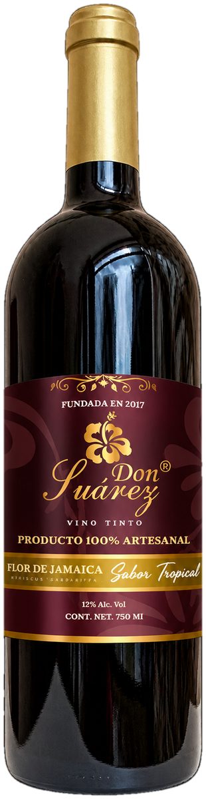
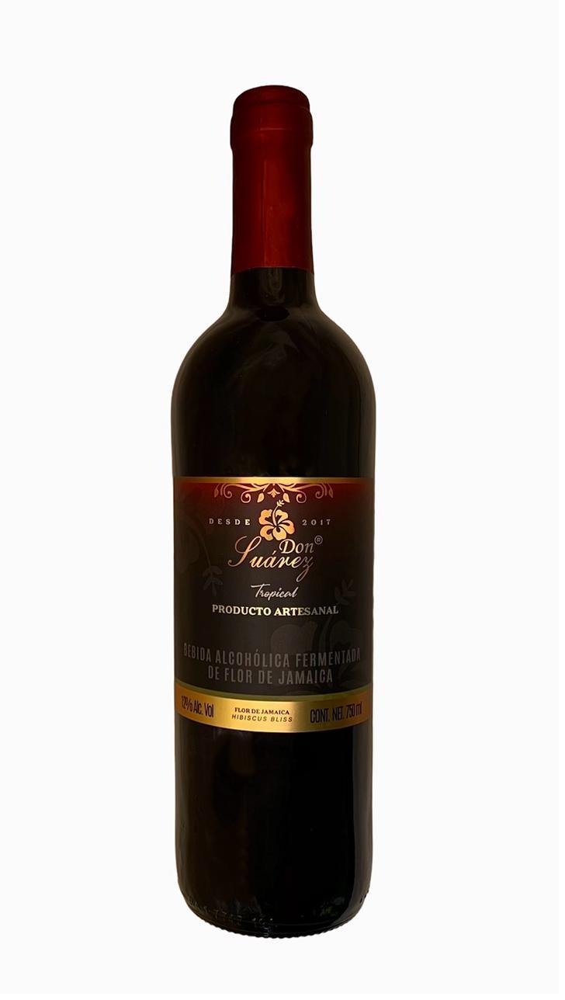
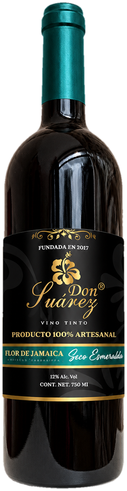

Sabor Tropical
Vino tinto · Flor de Jamaica
750 ml · 12% Alc. Vol.
Producto 100% artesanal
$150.00Precio por botella
Vino tinto elaborado 100% de forma artesanal a partir de la Flor de Jamaica, cultivada y cosechada en las tierras de la Casa Suárez, ubicada en la península de Yucatán.

En Vino Don Suárez creemos que cada copa cuenta una historia. Somos una empresa orgullosamente campechana y mexicana, dedicada a la elaboración de vino 100% artesanal desde 2017, hecho con la mejor Flor de Jamaica cultivada de forma natural.
Nuestro proceso combina tradición y pasión, transformando los sabores intensos y los aromas frescos de la jamaica en una experiencia única para los sentidos. Cada botella refleja el esmero de manos campechanas y el compromiso con la calidad, la autenticidad y el respeto por la tierra.
Don Suárez no es solo un vino: es el resultado de la innovación, el orgullo regional y el amor por lo artesanal. Brindamos por quienes disfrutan lo natural, lo nuestro y lo hecho con el corazón.
Un vino de intenso color rojo esmeralda, aromas tropicales suaves y un final delicado. Una experiencia única, nacida de la tierra campechana.
La Flor de Jamaica, gracias a su contenido de ácido hibiscus, vitaminas y minerales, es la protagonista de cada botella Don Suárez. Estas son algunas de las razones por las que la elegimos como base de nuestro vino artesanal:
Fortalece las defensas naturales del organismo.
Contribuye a limpiar y purificar el organismo.
Ayuda al equilibrio natural de líquidos.
Un aliado natural para el descanso y la vitalidad.
Arma tu pedido y envíalo por WhatsApp. Te atendemos directamente en el chat.

Vino tinto · Flor de Jamaica
750 ml · 12% Alc. Vol.
Producto 100% artesanal

Vino tinto · Flor de Jamaica
750 ml · 12% Alc. Vol.
Producto 100% artesanal
Venta exclusiva a mayores de 18 años. Evita el exceso: tomar bebidas alcohólicas en exceso es dañino para la salud.
Elaboración y comercialización de vinos tintos a base de Flor de Jamaica de alta calidad y disfrute. Contribuimos al desarrollo de la región y su gente.
Consolidar la marca para que sea capaz de competir globalmente y ser una empresa líder, brindando confianza y seguridad con productos de alta calidad para nuestros clientes en un mercado lleno de infinitas marcas.
Biólogo marino de formación, actualmente cursando la Maestría en Comercio Exterior y Negocios Internacionales. Director General y Fundador de Vinos Don Suárez, marca campechana dedicada a la elaboración de vinos artesanales a base de Flor de Jamaica, y también de Carassius, empresa productora y comercializadora de peces de ornato.
Es también Presidente del Colegio de Desarrollo Ambiental A.C. y del Comité de Sanidad e Inocuidad Acuícola del Estado de Campeche, y miembro activo de CANACINTRA, desde donde impulsa el desarrollo empresarial y la valorización de los recursos naturales de la región.
Sube una foto brindando con Don Suárez. Revisamos cada imagen antes de publicarla en la galería.
Cargando fotos…
Contenido para mayores de 18 años. Evita el exceso: tomar bebidas alcohólicas en exceso es dañino para la salud.